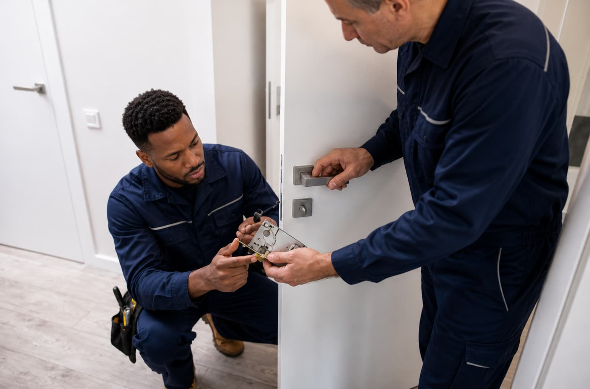

Urgent lock-related requests may involve home lockouts, vehicle lockouts, broken keys, damaged locks, or access concerns that need prompt attention. LockBridge Connect helps users organize the request and connect with independent local providers when available.
Included urgent request details
- Home, vehicle, or property access concern
- Lost, broken, or misplaced key context
- Damaged lock or lock not turning
- Location, urgency, and preferred contact method
Before approving service
Provider availability and response times may vary by location, time of day, and service type. Confirm pricing, identity, proof requirements, and service terms before approving work.
What urgent locksmith-related requests usually cover
Urgent requests are typically centered on restoring lawful access, evaluating a lock or key problem, and helping the user understand which provider options may be available. Situations can include a person locked out of a home, a misplaced key, a broken key, a damaged lock, or a time-sensitive access concern at a residential, automotive, or business location.
LockBridge Connect does not open locks or provide technical entry instructions. The platform helps organize the request so independent providers can decide whether they are available to discuss the situation, required proof, estimated timing, and pricing.
Standards users should ask about
- Provider identity and business name before service begins.
- Licensing or registration requirements that may apply in the state or city.
- Written price range, service call fee, labor, parts, and after-hours charges.
- Proof-of-authorization requirements for homes, vehicles, rental units, or workplaces.
Information to prepare
- ZIP code, cross street, or safe meeting location.
- Type of property or vehicle involved.
- Whether the key is lost, broken, inside the property, or not turning.
- Preferred contact method and whether the request is urgent or scheduled.
No. LockBridge Connect is an independent referral platform and does not directly perform locksmith services or employ locksmiths.
Yes. Verify identity, pricing, licensing where applicable, proof requirements, and service terms before approving any service.